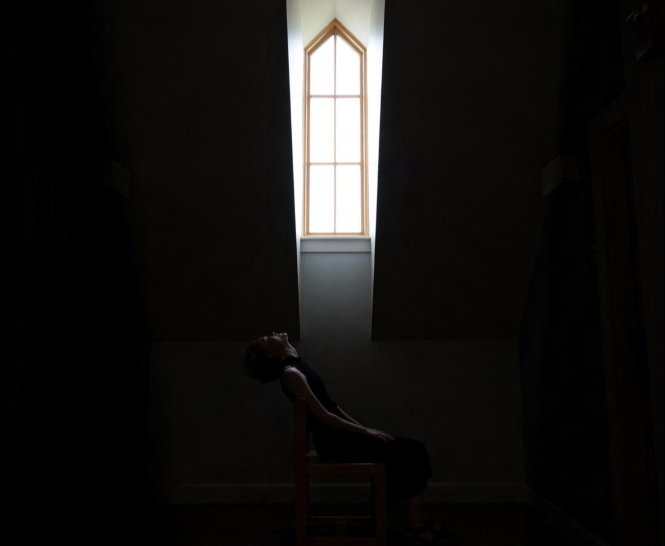
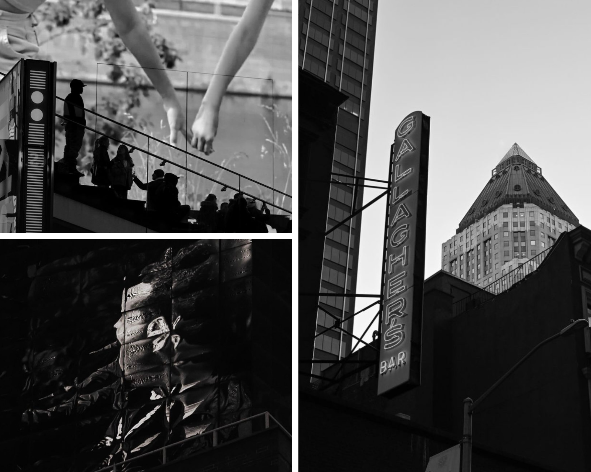

Artist's Statement:
This self portrait was taken in the hallway of a college dorm where I was staying during a summer camp. The perfect geometry of the window, framed by soft sunlight, appeared angelic and inviting. I used the self-timer setting of my camera to capture it. Underexposing the image to temper the light filtering in from the window, it was intentional that only the edge of my features be illuminated as to convey a sense of sensory deprivation in contrast to that inviting sense of light
Artist's Statement:
I wanted to capture powerful emotions in such a meaningful moment. This photo showcases that with the composition and placement of the subject drawing the viewer's eye towards the crown being placed on his head. The looming figure accentuates the importance of the moment. My goal was to create a lasting impression on the viewer and evoke the same pride the subject feels.
